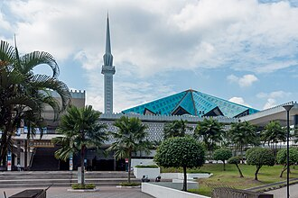

تعارف
Masjid Negara en français : « Mosquée nationale », situé à Kuala Lumpur, est la mosquée nationale de Malaisie. Pouvant accueillir 15 000 personnes, elle est l'une des plus grandes mosquées d'Asie du Sud-Est. Elle fut construite en 1965 puis rénovée en 1987. Elle associe une architecture islamique traditionnelle à des matériaux modernes. La structure originale a été conçue par une équipe de trois personnes du Département des travaux publics : l'architecte britannique Howard Ashley et les Malais Hisham Albakri et Baharuddin Kassim. Son minaret est haut de 73 mètres.
مسجد نغرا، الواقع بكوالالمبور، هو مسجد وطني ماليزي تصل طاقته الاستيعابية 15.000 مصل، ويعتبر واحداً من أكبر مساجد جنوب شرق آسيا. بني سنة 1965 وتم تجديده في 1987. يجمع بين المعمار الإسلامي التقليدي بالوسائل الحديثة، الرسم التصميم كان لمجموعة متكونة من ثلاثة أشخاص في مجال الأشغال العمومية هم المهندس المعماري الإنجليزي هوارد أشلي والماليزيان هشام البكري وبحرالدين قاسم.
The National Mosque of Malaysia is a mosque in Kuala Lumpur, Malaysia. It has a capacity for 15,000 people and is situated among 13 acres (53,000 m2) of gardens. Its key features are a 73-metre-high (240 ft) minaret and a 16-pointed star concrete main roof. The umbrella, synonymous with the tropics, is featured conspicuously – the main roof is reminiscent of an open umbrella, the minaret's cap a folded one. The folded plates of the concrete main roof are a creative solution to achieving the larger spans required in the main gathering hall. Reflecting pools and fountains are spread throughout the compound. Completed in 1965, the mosque is a bold and modern approach in reinforced concrete, symbolic of the aspirations of a then newly independent nation.
Malezya Ulusal Camii, Malezya'nın başkenti Kuala Lumpur'da bulunan bir camidir. Cami 1965 yılında inşa edilmiş olup 1987 yılında restore edilmiştir. Camii Malezya'nın önemli simgelerinden biridir.
Masjid Nasional Malaysia atau lebih dikenal dengan Masjid Merdeka Malaysia adalah sebuah masjid nasional yang berada di kota Kuala Lumpur, Provinsi Kuala Lumpur, Malaysia. Masjid ini awalnya merupakan sebuah bekas gereja yang dibangun pada tahun 1919, kemudian atas keputusan Pemerintah Federasi Malaysia, bangunan ini diubah menjadi masjid pada tahun 1963.
ملائیشیا کی قومی مسجد (مالے: Masjid Negara Malaysia, مسجد نݢارا مليسيا) کوالا لمپور، ملائیشیا میں ایک مسجد ہے۔
Die Nationalmoschee oder “Moschee des Staates” ist die Nationalmoschee von Malaysia.
La Mezquita Nacional de Malasia es una mezquita situada en Kuala Lumpur. Tiene capacidad para 15000 personas y se sitúa en 53000 m² de hermosos jardines. La estructura original fue diseñada por un equipo de tres personas del Departamento de Obras Públicas. La mezquita se construyó en 1965 en la ubicación de una iglesia, el Salón de Gospel de Venning Road, que se situaba aquí desde 1922, pero fue expropiado por el gobierno de Malasia. La mezquita es un enfoque audaz y moderno en hormigón armado, que simboliza las aspiraciones de la entonces recién independizada Malasia.
La Moschea Nazionale della Malesia è un luogo di culto islamico situato a Kuala Lumpur, la capitale della Malesia. Si trova non lontano dalla stazione ferroviaria della città.
マスジッド・ネガラ(マレー語: Masjid Negara)またはマレーシア国立モスクは、マレーシアの首都・クアラルンプールにある同国の国教であるイスラム教の礼拝堂・モスクである。
마스지드 느가르(말레이어: Masjid Negara)는 말레이시아 쿠알라룸푸르에 위치한 모스크이다. 총 15,000명 수용이 가능하며 13에이커(53,000제곱미터) 정도 되는 아름다운 정원에 위치해 있다. 마스지드 느가르는 서말레이시아 발음이며 '마스지드 느가라'라고도 한다. 영어명칭인 국립 이슬람 사원(National Mosque)으로도 알려져 있다.
Негара — национальная малайзийская мечеть Куала-Лумпура, построенная в 1965 году. Главный зал мечети вмещает 8 тыс. человек и особенно заполнен по пятницам. Комплекс мечети состоит из ребристого звездообразного купола и минарета высотой 73 м.
Moscheea Națională a Malaeziei sau Masjid Negara este o moschee din orașul Kuala Lumpur, Malaezia. Construită într-un design modern și original, aceasta este moscheea națională a acestei țări.
نقشے پر
دستاویزات اور لنکس
- Wikipédia — Français
- Wikipédia — العربية
- Wikipédia — English
- Wikipédia — Türkçe
- Wikipédia — Bahasa Indonesia
- Wikipédia — اردو
- Wikipédia — Deutsch
- Wikipédia — Español
- Wikipédia — Italiano
- Wikipédia — 中文
- Wikipédia — 日本語
- Wikipédia — 한국어
- Wikipédia — Русский
- Wikipédia — Română
- Wikidata — Q1356818
ڈیٹا: Wikidata (CC0)، ہر 3 ماہ بعد تازہ کیا جاتا ہے۔ سال عمارت کی معلوم قدیم ترین تاریخِ تعمیر ہے: جو عمارت بعد میں مسجد بنی (جیسے آیا صوفیہ)، اس کے لیے اصل عمارت کا سال دیا گیا ہے۔ تصاویر: Wikimedia Commons، ہر تصویر کے صفحے پر مصنف اور لائسنس۔